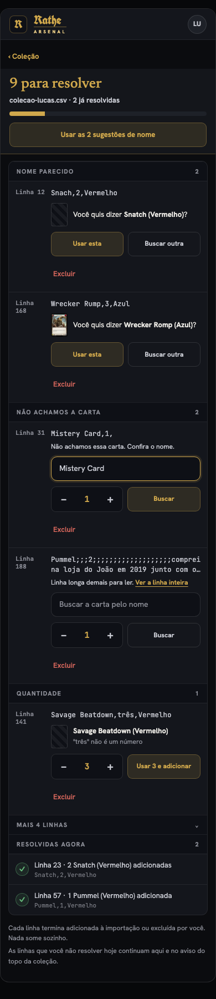
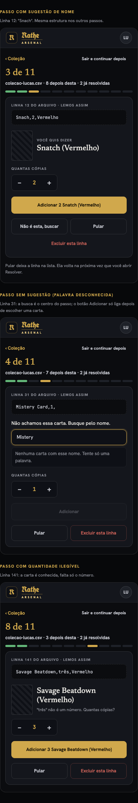

Todas as linhas de uma vez, agrupadas por motivo, com contador fixo no topo e atalho para aceitar todas as sugestões de nome.

Um passo focado por linha, com a carta, a quantidade e um botão grande para adicionar, para zerar a fila sem rolar uma lista longa.
